Theravane User Manual
Welcome to Theravane
Theravane is a secure feature rich smartphone-based App for healthcare professionals that is designed to optimize patient care and enhance collaboration among healthcare professionals.
This manual outlines the key features and functionalities of the Theravane App for Doctors.
Please note: You have to be a qualified Doctor to be granted sign up privileges to use the Theravane App. Once you have been vetted by your Workspace, you will receive an email invitation to join the Theravane App as a user.
Getting Started
We will send you an invite into your email which you will then click on a link and download Theravane on Android Play Store or IOS.
- For new users: Complete the registration process via the "Sign Up" option.
- For returning users: Click on the "Login" button.
Logging into Theravane App
After signing up you can now launch the Theravane App for better patient care on your smartphone device.
Enter your email address and password and click login.
Passwords must at least 8 characters long and include at least one character from each of the following categories:
- Lowercase letters (a-z)
- Uppercase letters (A-Z)
- Numbers (0-9)
- Special characters (e.g., !@#$%^&*()_+{}[]|:;<>,.?~)
Example: Admin@123
Screen Overviews
Landing Page
On opening the Theravane App, you will be presented with the landing page. Theravane will display your name prominently at the top of the page. There are four tabs at the bottom of the page:
Messages
The "Message" tab will display all the conversations that you are involved in. These may be Private conversations, Group Chats and Episode of Care Chats.
Episodes
This tab will display all the Episodes of Care that you have access to and are currently working on.
Dashboard
Provides a comprehensive overview of Orders sent to Pathology, Radiology and the Ward as linked diagnostic healthcare providers.
Profile
Shows user-specific information and allows you to invite colleagues and create new groups.
Landing Page Menu Options
Fab (Circle blue button)
This menu opens into the quick selection of the Plus, Filter and Search Menu options
- Plus Menu: Create new Episode of Care, Add new Patient, Chat with another Workspace User, Create new Group
- Filter Menu: Narrow down or refine displayed data based on specific criteria
- Search Menu: Quickly search for Patients
Episode of Care
Episode
An episode is used to track all clinical interactions, treatments, and services provided within a specific time frame, including a pool of ICD-10 codes and CPT-4 procedures.

Clinical Notes
Written records documenting patient interactions, assessments, treatments, and progress.

Vitals
Clinical measurements providing essential information about a patient's physiological status.

Orders
Create and manage Pathology, Radiology and Other medical orders.

Forms
Access and manage forms like the Triage Form for patient assessment.
Patient
Patient Information is the comprehensive set of data that records an individual's demographics, and other relevant details such as Next of Kin etc.

Chat Media
Any Media that is shared in chat attached to the Episode of Care is visible here for quick access.
Admin Notes
Administrative notes are for the recording of administrative information about the Episode of Care. This can be the recording of a Patient's movement within a Hospital, or the recording information about an Authorisation code obtained from a Medical Funder.

Members
A section where administrators or users can view, manage, and interact with the list of individuals who are part of the Episode of Care. It provides essential information about the members and often includes management features such as adding, editing, or removing members.
Previous Episodes
Previous Episodes section refers to a digital archive where clinicians can access and review a patient’s past medical encounters, treatments, consultations, or procedures.
How To
Creating a New Order
-
Navigate to the Episode of Care:
Select the Episode of Care from the Episodes list or use the search function.
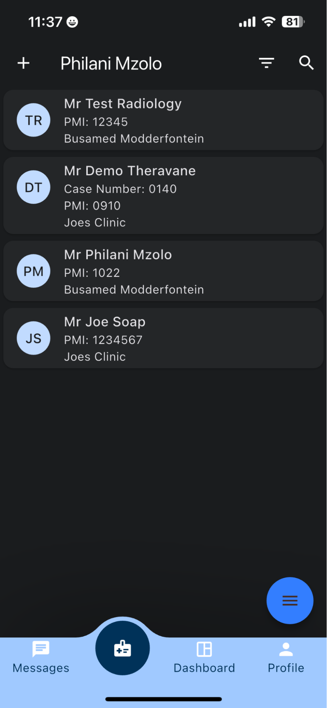 -
Access Orders Section:
Look for the section labeled "Orders" in the Episode of Care.
-
Create New Order:
- Tap on the FAB blue menu dot
- Select the "Create Order" option
- Tap on the “Order Type” dropdown and select amongst Pathology, Other and Radiology
- For Pathology and Radiology orders, tap under Pathology or Radiology test required. This will bring up a new screen allowing for the selection of the tests that are to be ordered.
- Once all the Tests have been selected tap the “Add Selected Items”. This will return you to the order screen and display the Tests that were selected.
- For Radiology Orders, the Motivation for the Tests needs to be included.
- Select when you want the order to be completed.
-
Confirmation
The system will display a confirmation message or notification on healthcare providers once the order is successfully created.
The new order will now be visible and displayed under the patient’s Episode of Care in the record

-
Track Status:
Monitor order status (In progress, completed, etc.) through the dashboard.
 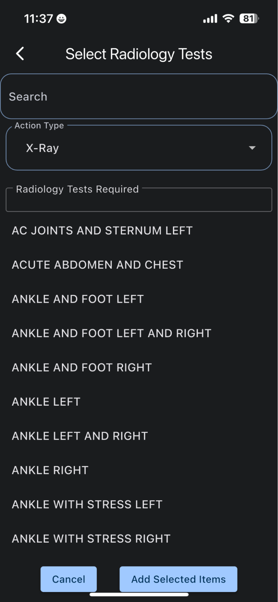
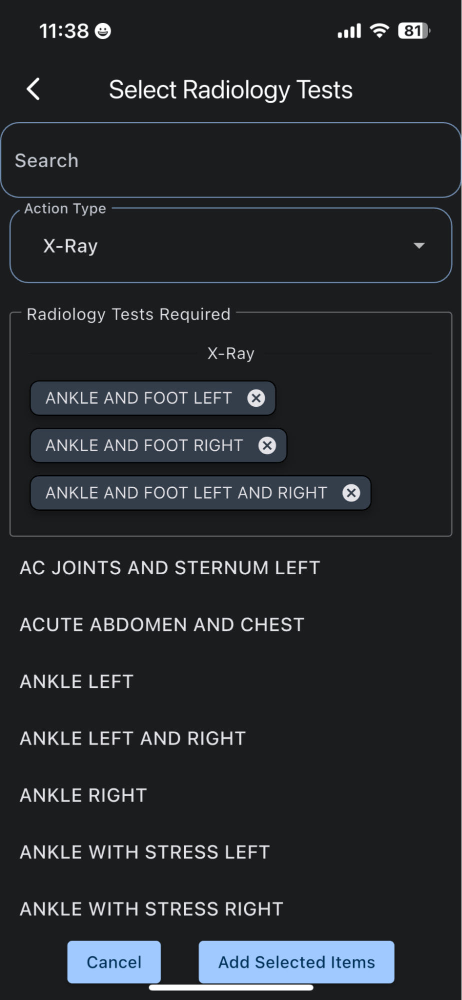
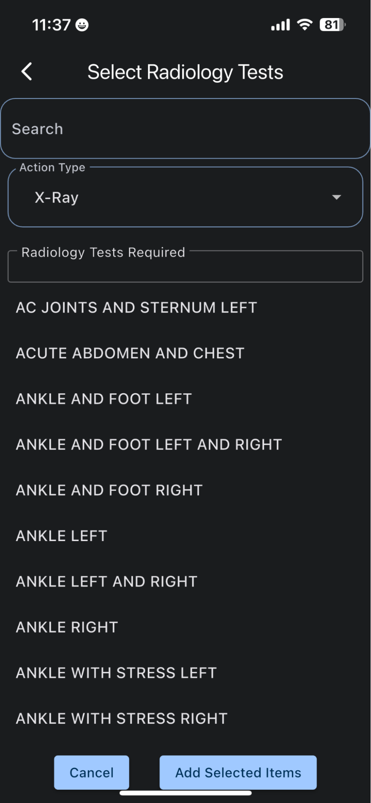
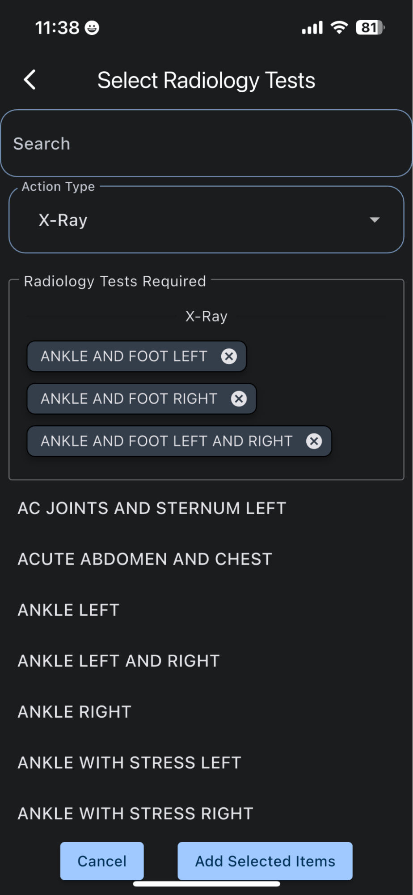
Adding Clinical Notes
- Find the Clinical Notes tab in the banner menu
- Alternatively, use the blue circle menu and select "Add Clinical Note"
- Enter your clinical notes in the form
- Click "Add Notes" to save
Managing Episode Members
-
Access Members:
Navigate to the "Members" section within the Episode of Care
-
Add New Members:
- Click the blue circle menu
- Select "Add Members"
- Choose members by checking their boxes
- Click "Add Users" to confirm
 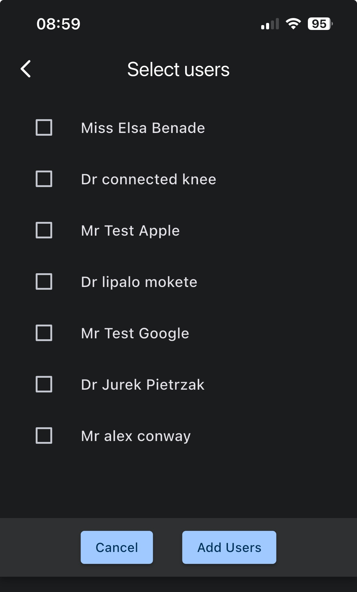
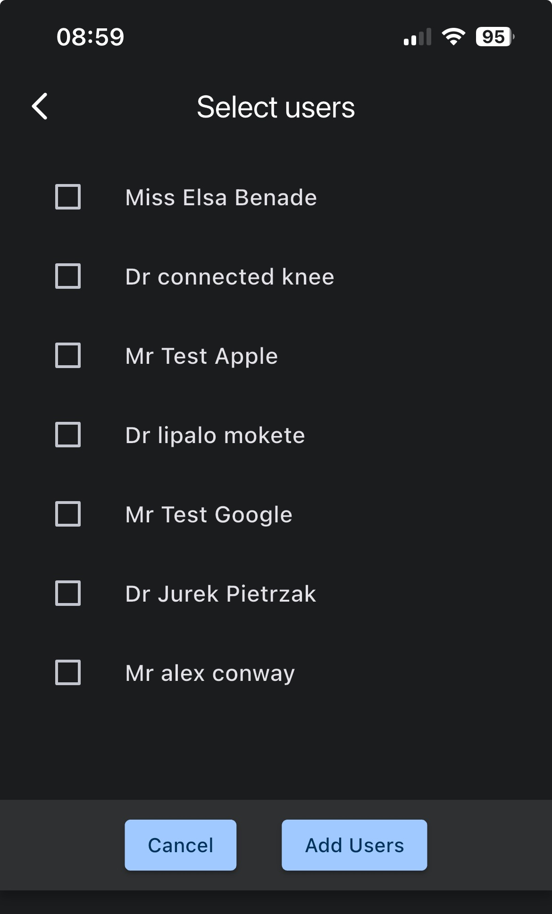
Updating Episodes of Care
-
Find the Episode:
- Use the search menu to find the patient
- Navigate to the "Episodes" section
- Select the specific episode to update
-
Make Updates:
- Click the blue circle button
- Select "Edit Episode"
- Update the necessary fields
- Save your changes
Starting a Chat with Colleagues
-
Access Chat Options:
- On the landing page, tap the FAB (blue icon) in the bottom right corner
- Select the + icon from the menu
-
Start New Chat:
- Choose "Chat with another Workspace User"
- Select the user from the directory
- Tap "Chat with User" to begin
-
Chat Features:
- Send text messages in the "write a message" space
- Attach files using the paperclip icon
- Share videos and photos as needed

 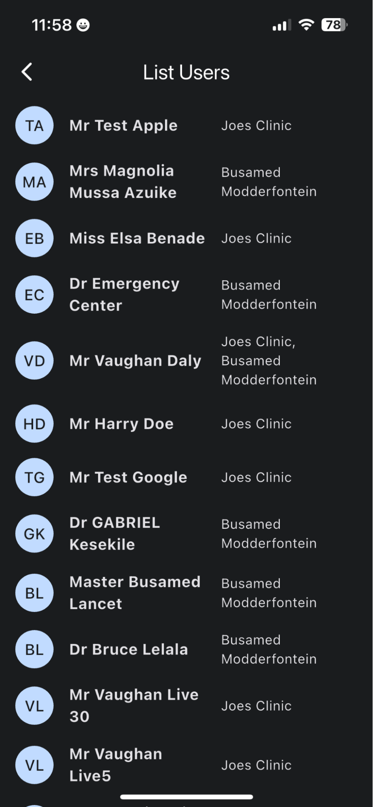
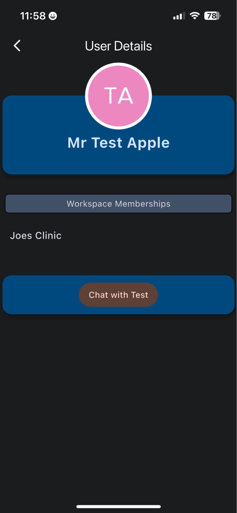
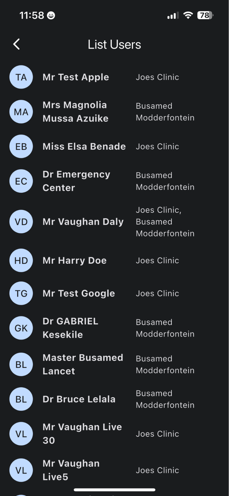
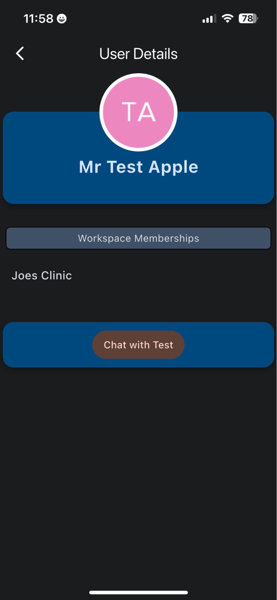
Support Information
If you encounter issues that you cannot resolve using this manual, please contact IT support:
- Email: support@theravane.com
- Phone: 073 289 0486 (Vaughan) or 078 271 5162 (Philani)
- Hours: Monday to Friday, 8:00 AM to 5:00 PM with limited after-hours support
Remember to save your work frequently and log out of the system when you're finished to protect patient privacy and ensure data security.